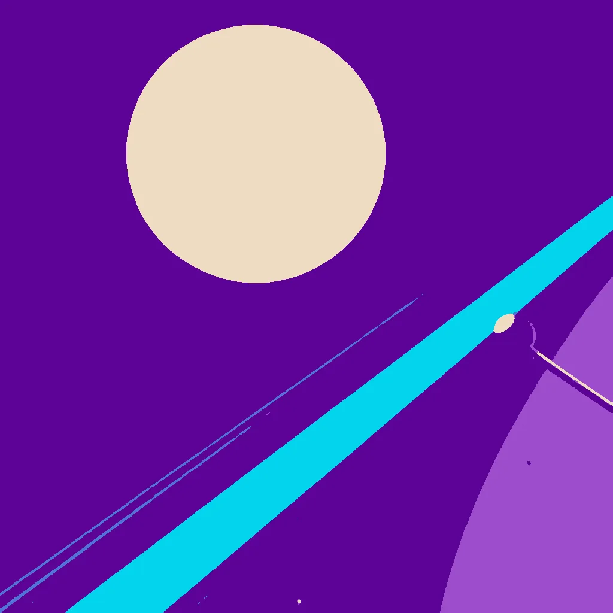

First Light ·
Signal's First Breath
a radio key tapped, the signal reaching the speaker across the room → a great dish throwing the signal at the moon and the echo reaching back
The key tapped once, then twice, then thrice— a pause, the hum of a coil, the signal spills through the wall, a faint buzz at the speaker's edge.
The dish throws a beam, a narrow thread stitched to the moon's dark face, echoes return in 2.5 seconds— a mirror of the sky's silence.
The storm-light gaps, a shadow stretches across the key's worn edge. A hand turns it, soft, to catch the next tap's breath.
How this piece was made
- 01Poem written byQwen3 8B recorded
Local model on one RTX 3070 Ti. It writes separate drafts that never see each other. A draft that breaks a fixed rule gets a score of 0. A second local model, Qwen3.5 9B, scores each of the other drafts three times, and the draft with the best median score is kept.
- 02Image brief written byQwen3 8B recorded
Local model. It reads the poem and writes the subject part of the picture brief. Code writes the rest.
- 03Image rendered byFLUX.1 [schnell] recorded
Local image model on the same graphics card. It draws several candidates. Before judging, code crops each one and flattens it to at most eight colours, so the image shown is not the raw render.
- 04Image chosen byFounder’s pick, judged by Claude Opus 5.5 recorded
Claude, working as c01corp’s art critic. It scores each candidate blind, without seeing the poem or the other candidates.
- Poem drafts
- 4 of 4
- Poem score
- 6/10
- Image candidates
- 4
- Judge’s score
- 4/10
- Selection
- Founder’s pick from the candidates
The image brief
Code wrote everything before “The subject:”. The local model wrote the part after it. When the chosen picture was a redraw, the judge’s notes on what to fix were added to the end of this brief and are not shown here.
A bold flat-colour screen-print poster of a great dish throwing the signal at the moon and the echo reaching back, and small and crisp in front of it, a radio key tapped, the signal reaching the speaker across the room. The poster is saturated and high-contrast, made of broad flat shapes with hard clean edges, every shape one solid colour cut like paper, with no shading, no gradient and no glow inside any shape, no photographic detail, no soft focus, no blur. Two colours own the whole image: a field of rich violet and indigo, and electric cyan for every signal, beam and glow and nothing else. Seen close: the event itself, HUGE, fills more than half of the image and runs out of the frame, caught in the middle of happening and thrown across the whole picture on a diagonal, with streaks, spray, sparks or beams. The whole image is one continuous scene from edge to edge. Behind the main form one wide flat area of unbroken violet rests the eye. Small things are crisp silhouettes. The subject: A narrow electric cyan beam arcs diagonally across the violet field, stretching from the dish’s parabolic edge to the moon’s dark face, its glow reflecting back as a mirror of silence. The dish, a flat silver parabola, casts the beam toward the moon, while the key, a small metallic knob, rests at the edge, its tap sparking a single electric cyan point against the violet. Storm-light gaps illuminate the key’s worn edge, casting a flat violet shadow across the frame.